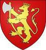

Antavla
1429209090 Medkung Ragnfred Eiriksson av Norge
Medkung i Norge och York i England. Blev högst 59 år.

Far:
Erik "Blood-axe" Haraldsson (885 - 954)
Mor:
Gunhild Gormsdatter (910? - 987)
Född:
923 Norge.
[1]
Död:
982 York, England.
[1]
Barn med ?
Barn:
Rangfredsdotter (975? - >1035)
Personhistoria
Årtal
Ålder
Händelse
923
Födelse 923 Norge
[1]
954
Fadern
2858418180 Konge Erik "Blood-axe" Haraldsson
dör 954 Stainmore, England
[2]
975?
Dottern
714604545 Rangfredsdotter
föds omkring 975 Norge
[3]
982
Död 982 York, England
[1]
Källor
[1]
Lowenberg.se
[2]
Familjen Blom
[3]
Stenbanken.com